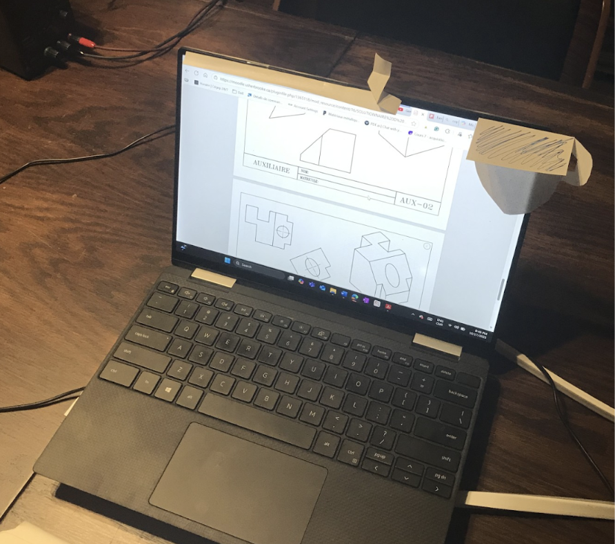
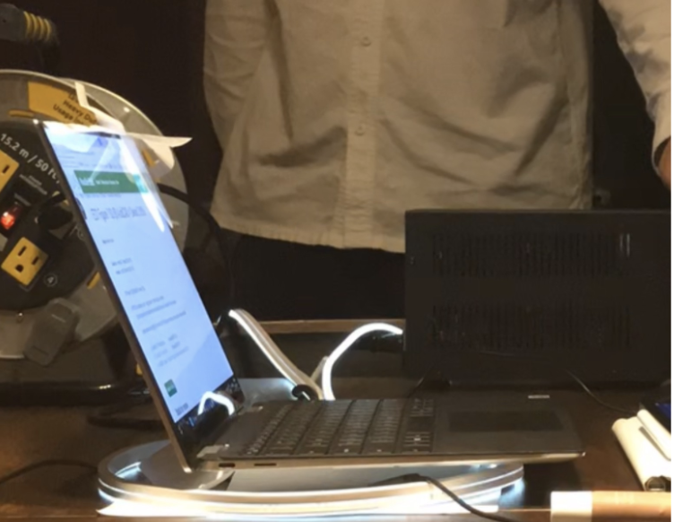
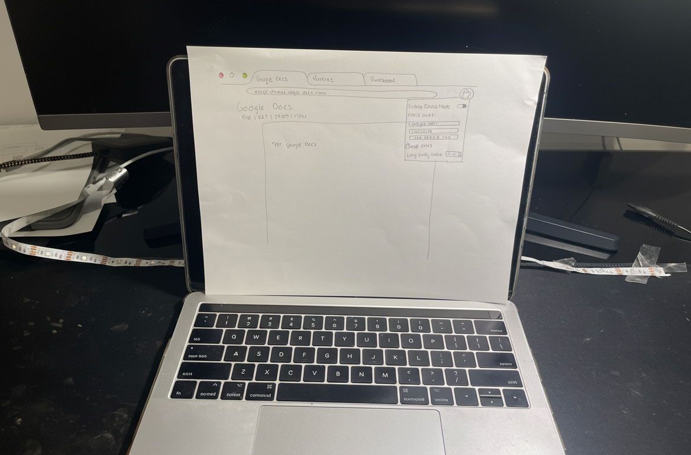
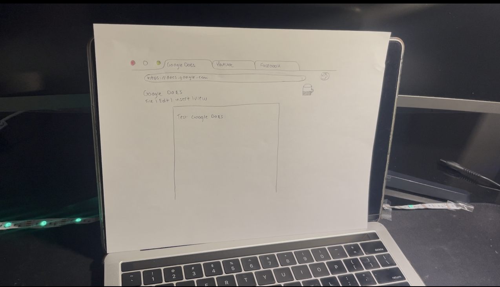
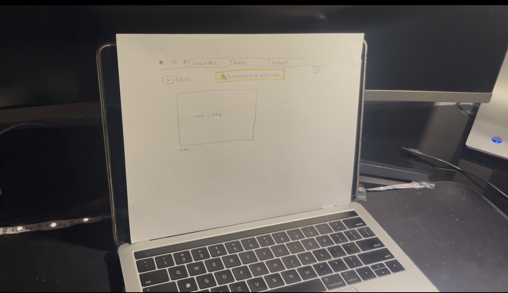
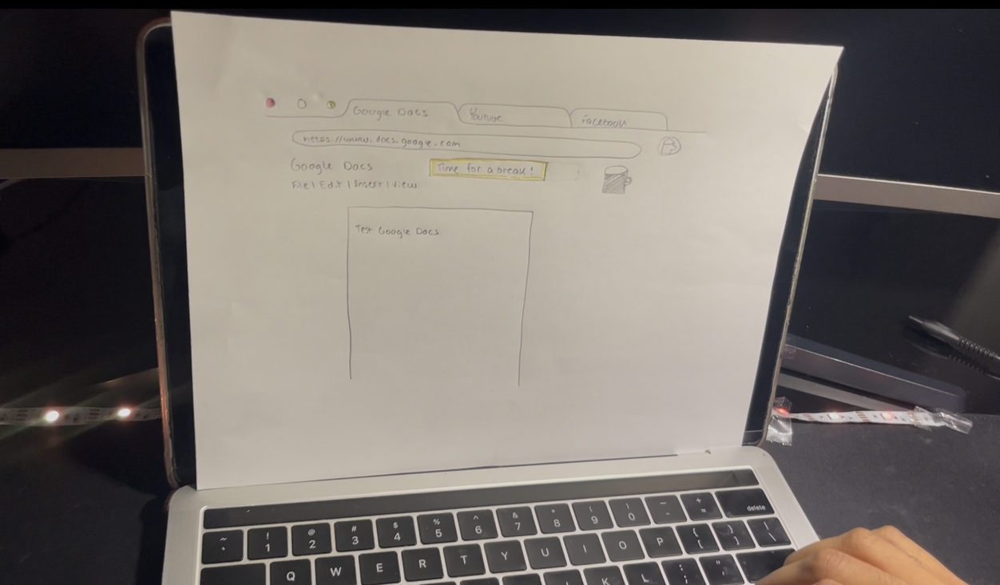
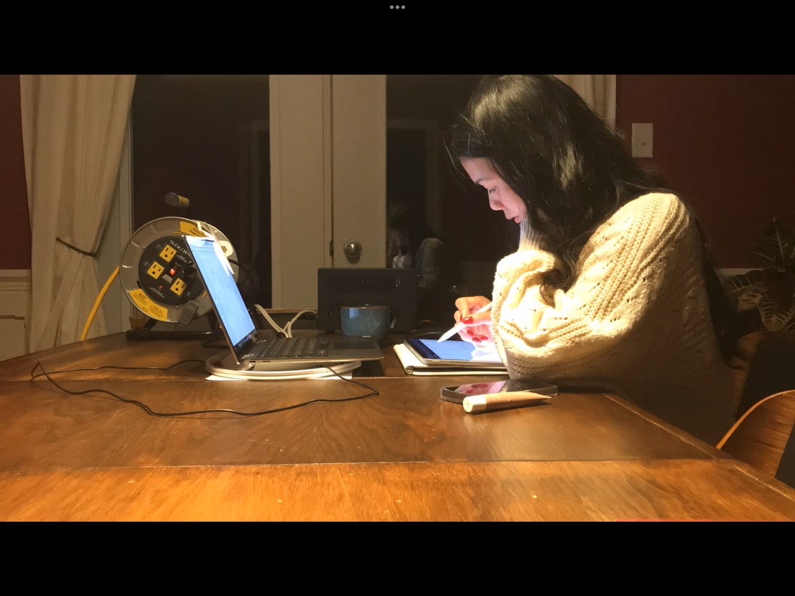
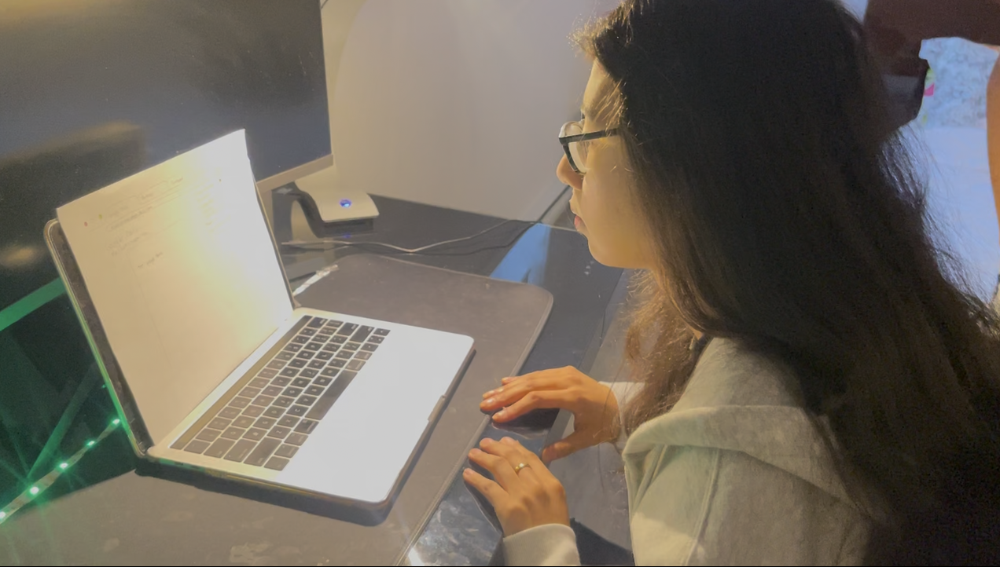
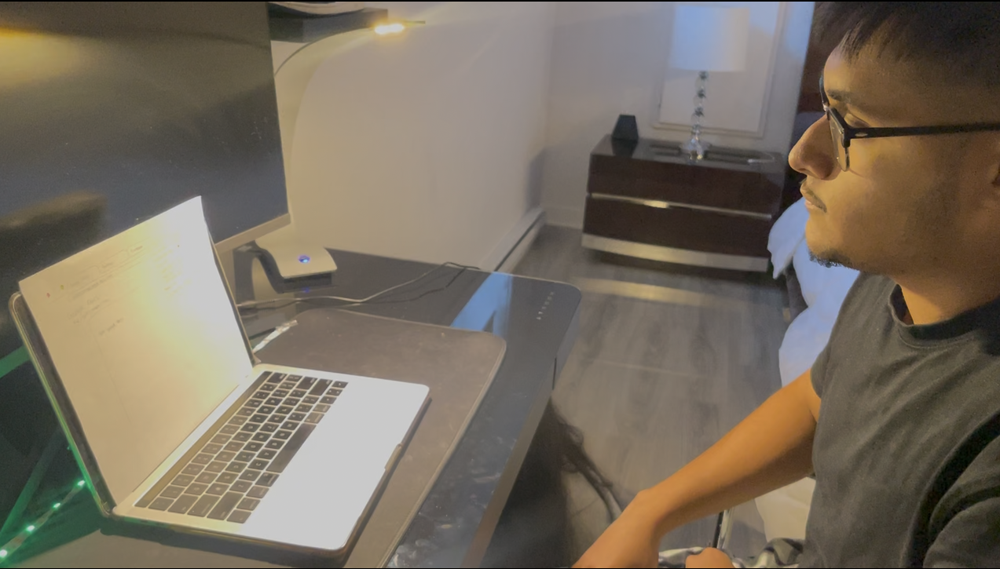

Below are the two PDF documents detailing the initial and improved iterations:
Original 10 Concepts
Improved 10 Iterations
The development of the study support system employed an iterative design process rooted in the 10+10 method. There
were ten original ideas developed in the initial stage to explore a wide variety of possibilities for enhancing
concentration and interest during study sessions. They varied in their complexity, from ambient lighting cues to
touch feedback systems and interface overlays. Following evaluation of their feasibility and likely impact, ten
improved iterations were constructed based on the previous system’s bests.
Two designs were selected from this improved set, each to perform a different function within the overall
evaluation of the system. The first design was chosen specifically to test the efficacy of ambient lighting when
incorporated into a real study environment. This version was minimalist in its interaction design to enable
researchers to isolate and observe how lighting by itself impacted the user's focus and mood with no interference
from other stimuli. The interest was whether minor visual cues would enhance attention in a naturalistic setting.
The second prototype was tested with the cumulative effect of multiple feedback cues, including vibration, color
lighting, and a structured interface. For an immersive study environment, a paper interface was placed in front of
the computer so that participants were able to interact with the system as they would during an actual study
session. This allowed for the testing of multiple feedback mechanisms and their influence on user behavior,
attention, and subjective intrusiveness.
By having these two disparate prototypes, the research was able to obtain complementary results: one related to
the ambient effect of illumination in an environment, and another related to the overlap of multimodal cues across
a working surface. This two-sided idea tried to get a comparison while understanding how diverse elements
influence
user experience and focus. This served as the next iteration of the system through grounded, user-driven evidence.
Prototypes
Prototype 1 (Chosen from Design 1 of 2nd Iteration)
Prototype Setup:
Laptop Screen: Displays paper mockups of the browser extension interfaces.
Desk Mat: Features an LED light strip attached under the laptop. The LED intensity and frequency
changes based on the system's state (Low pulsing when it’s break time, rapid pulsing for distraction).
Workflow Illustration
1. Initialization and Setup
User Goal: Start a new focused work session by defining allowed websites and session timing.
Prototype State:
Screen: The setup interface is displayed. The user chooses its tab in front of the observer and decides on the
timer
for the Pomodoro technique. The observer adjusts the width to block access to non-chosen tabs.
Underneath LED: Off.
Coffee Mug: Empty.

Figure 1: Setup Interface
2. Maintaining Focus
User Goal: Work productively on approved, focused tabs.
Prototype State:
Screen: The user is on a focused tab (e.g., Google Docs). The coffee mug icon in the browser's toolbar is
partially
filled, providing a visual progress indicator for the current focus interval.
Underneath LED: Off, the user is studying as normal.
3. Handling Distraction
User Goal: Be made aware of and recover from being on distracting activities such as texting or using social
media.
Prototype State:
LED: Rapidly pulsing (breathing) to signal a distraction.
Screen: Optionally dimmed or blocked for non-focus tabs to alert the user.
4. Break Time
User Goal: Be notified that it is time to take a scheduled break.
Prototype State:
Screen: The focus timer has ended. A notification ("It’s time for a break!") appears. The coffee mug icon is now
completely full.
Desk Mat LED: Slow pulsing (breathing) to indicate a transition from work to rest.

Figure 4: Break Reminder with LED signaling rest period
Prototype 2 (Chosen from Design 4 of 2nd Iteration)
Prototype Setup:
Laptop Screen: Displays paper mockups of the browser extension interfaces.
Desk Mat: Features an LED light strip attached behind the laptop. The LED color changes based on the system's
state (Green for focus, Yellow for break/distraction).
Haptic Feedback: An iPad placed under the mat vibrates to simulate physical nudges.
Workflow Illustration
1. Initialization and Setup
User Goal: Start a new focused work session by defining allowed websites and session timing.
Prototype State: Screen shows setup interface where users input Focus Tabs and session durations. LED and haptic
feedback are off.

Figure 1: Setup Interface
2. Maintaining Focus
User Goal: Work productively on approved tabs.
Prototype State: Green LED glow, coffee mug partially filled, haptic feedback off.

Figure 3: Active Focus Mode
3. Handling Distraction
User Goal: Be aware of navigating to distracting websites.
Prototype State: Tab dimmed, yellow LED, vibration active.

Figure 4: Distraction Detected
4. Break Time
User Goal: Be notified when it’s time for a break.
Prototype State: Break notification, LED warm yellow, short vibration burst.

Figure 5: Break Reminder
This low-fidelity prototype demonstrates the core value of FocusBrowse: using on-screen cues, ambient light, and
haptic feedback to promote mindful productivity.
Usability Goals
The success of the FocusBrowse system is evaluated against five key usability goals: Learnability, Efficiency,
Satisfaction, Error Recovery, and Engagement (Non-Intrusiveness). The following objectives and corresponding
metrics are designed to be directly measured using data collected from the benchmark tasks and post-testing
questionnaire.
Usability Goal
Objective
Measurement Method
Key Metric(s)
Success Criteria
Learnability
Ensure new users can independently configure and navigate the system quickly.
Benchmark Task 1: Starting the Focus Session; Benchmark Task 2: Interacting with the Restrictive UI
(timed observation).
Time (seconds) from task start until session active; time taken to correctly navigate the interface
without assistance.
100% of participants complete setup within 2 minutes; minimal errors or confusion navigating the
interface.
Efficiency
Minimize time lost to distractions during study sessions.
Benchmark Task 2: Interacting with the Restrictive UI; Benchmark Task 3: Reacting to a Distraction;
Post-test question: "Did the system help you stay focused?"
Duration (s) spent on non-focus tabs; Likert rating of focus support; time to return to focused tasks.
Short average distraction recovery time; average Likert score ≥ 4/5.
Satisfaction
Ensure users feel supported, comfortable, and productive using the system.
Post-testing questionnaire (Likert & open-ended questions); observations across all tasks.
Average ratings on ease of use, helpfulness of feedback, usefulness of reminders, and "Would you use this
system daily?"; qualitative feedback.
Average scores ≥ 4/5; positive qualitative feedback; users report confidence and comfort using the system.
Error Recovery
Help users quickly recover from distractions using the system’s cues.
Benchmark Task 2: Interacting with the Restrictive UI; Benchmark Task 3: Reacting to a Distraction
(timelapse video analysis).
Duration (s) from distraction feedback trigger to returning focus; number of errors before recovery.
Low average distraction duration; users respond effectively to feedback cues.
Engagement (Non-Intrusiveness)
Provide focus cues that are effective but not annoying or disruptive.
Post-test question: "How much did you find this system intrusive?"; Benchmark Tasks 2 & 3 observation;
qualitative feedback ("What would you improve?")
Average intrusiveness rating (Likert scale); observed hesitations, frustration, or ignoring cues;
qualitative comments.
Average intrusiveness score ≤ 2/5; minimal user complaints about feedback being too aggressive or
disruptive.
Benchmarking Tasks
To assess whether the system's usability goals are met, participants will be asked to complete a series of
benchmark tasks. These tasks are designed to encompass the core functionality of the system, from initial setup to
managing distractions and breaks.
Task 1: Starting the Focus Session
The first benchmark task requires participants to configure and initiate
a focus session. They will be asked to set up the system for a 50-minute study period focused on specific academic
websites, followed by a 15-minute break. The goal is to observe the initial setup process, measuring the time
taken
and noting any points of confusion. Success is achieved when the session timer begins, the empty coffee mug icon
becomes visible in the browser interface, and the LED light is green, indicating the system is active.
Task 2: Interacting with the Restrictive UI
The final task involves general navigation within the constrained environment. Participants will be asked to
perform typical study activities, such as navigating in their pre-approved tabs. The goal is to ensure that core
navigation remains fluid and unobstructed when staying within the defined parameters.
Task 3: Reacting to a Distraction
This task evaluates how users respond to the system's feedback when they become distracted. During their focus
session, participants will be instructed to intentionally open a non-focused website, such as a social media or
news platform. The key metric is the time elapsed between opening the distracting tab and returning to a focused
study tab.
Task 4: Taking a Break
The third task assesses the system's break reminder functionality. Participants will work until the system
automatically signals the end of the focus period. Success is measured by the user's adherence to the break prompt
and their seamless resumption of work when the next focus session begins.
Test Materials
User Documentation & Training
System Overview:
FocusBrowse is designed to help users stay productive during online study sessions by managing focus sessions and
minimizing distractions.
Prototype 1
Components:
Browser extension for managing focused websites
LED light under the laptop
Haptic alerts to notify the user of distractions
Lighting Cues:
Slow pulsing: Break time
Rapid pulsing: Distraction
Icons: ☕ Coffee mug fills up as focus time progresses
Prototype 2
Components:
Browser extension for managing focused websites
LED desk mat that changes color based on focus status
Haptic alerts to notify the user of distractions
Color Cues:
🟢 Green: Focus time
🟡 Yellow: Break time or distraction time
Icons: ☕ Coffee mug fills up as focus time progresses
Instructions:
Click the FocusBrowse icon in your browser toolbar to open the system menu
Configure your focus and break durations
Start your focus session
The system will automatically change modes and provide cues
You can adjust settings anytime via the toolbar icon
Description of Test Tasks
Task #
Task Description
Goal of Task
1
Configure a 50-minute focus session with a 15-minute break using the extension
Evaluate ease of setup and comprehension of the interface
2
Open a restricted tab (YouTube) and observe system feedback
Assess the user’s recognition of distraction feedback
3
Interact normally with Google Docs during focus mode
Test natural usability and any friction with the restrictive interface
4
Continue studying until prompted for a break, step away briefly, then resume
Assess how well users respond to and understand break cues
Pre-Test Questionnaire
#
Question
Response Type
1
Age
Integer answer
2
Field of Study
Short answer
3
Number of tabs open during study session
Integer answer
4
Tools used during study session
Short answer
5
Average Study Duration
Integer answer
6
Ability to stay focused on a scale of 1-5
Likert scale
7
Focus tools used during study session
Short answer
8
Would you classify yourself as a Easily Distracted Student, Overworker or Balanced Planner
Single choice answer
Prototype Testing Script
Observer Briefing
"The purpose of this session is to evaluate the usability of a focus-enhancing study system, our role as
observers is to observe your interactions. As such notes will be taken during the testing session, as well as
a timelapse to decipher more in depth how you will interact with the prototype. The system that you will be
tested on can be unintuitive and as observers we cannot provide any feedback. Thus, if there are any tasks
that cannot be completed during the testing session, this is completely normal and can be discussed after the
testing period ends. We ask for you to think aloud when you are working through the task. There is no wrong or
right answer, we're in fact not evaluating you, but the system. Thank you again for participating in this
research."
Pre-test Questionnaire
"Before beginning the test, I would like you to fill out a brief questionnaire to know about your normal
study behaviors."
User Introduction
"Welcome! You will be testing FocusBrowse, a system designed to help students stay focused during
online study
sessions. There are two prototypes you may interact with:
The first prototype focuses on ambient lighting cues under the laptop. Slow
pulsing = break, rapid pulsing = distraction. The coffee mug icon fills up as focus time progresses.
The second prototype uses multiple feedback cues: a color-changing LED desk mat, haptic alerts, and
structured interface. Green = focus, yellow = break/distraction. Coffee mug icon fills up as focus time
progresses.
The following instructions apply to both prototypes:
Click the FocusBrowse icon in your browser toolbar to access the system menu.
Configure your focus and break durations as instructed in the benchmark tasks.
Start your session and follow the visual and haptic cues provided.
Think aloud as you complete each task, describing your interactions and experience.
Follow break notifications and resume study when prompted.
The goal is to evaluate the system, not your performance. Your honest feedback is important for improving
FocusBrowse."
Task 1: Starting the Focus Session
"Your first task is to set up a FocusBrowse session. Imagine you have 50 minutes to work on a research
project using three websites: your university learning platform like myCourses, Google Docs for writing, and a
digital academic library. Please configure the system for a 50-minute focus period followed by a 15-minute
break, and start your session. Please begin when you're ready, and remember to think aloud."
Task 2: Reacting to a Distraction
"Now you're in the middle of your focus session. I'd like you to open the Youtube tab, which is a
restricted tab. Pay attention to how the system responds, and then return to your study task on Google Docs as
you normally would. Please begin."
Task 3: Interacting with the Restrictive UI
"For your final task, imagine you now need to study on your computer by interacting with Google Docs.
Please use Google docs as you would normally."
Task 4: Taking a Break
"For this task, please continue studying using your focused websites. Work until the system tells you to
take a break. When the break starts, please step away from the computer briefly. Return when the break is over
and resume studying for a moment. Please begin when ready."
Transitioning to Post-test Questionnaire
"Thank you for completing all the tasks. Now I'd like you to fill out a brief questionnaire about your
experience with the system. Please answer each question honestly based on your experience during the
tasks."
Conclusion
"That concludes our session. We really appreciate your time and feedback, which will be very valuable as we
continue developing the system."
Post-Test Questionnaire
#
Question
Response Type
1
How easy was it to use the system (1-5)
Likert scale
2
Did the system help you stay focused (1-5)
Likert scale
3
How helpful were the visual and physical feedback cues (1-5)
Likert scale
4
Did you find the break reminder useful (1-5)
Likert scale
5
What did you like the most about the system
Short answer
6
What would you improve
Short answer
7
Would you use this system on a daily study routine
Yes/No/Maybe
8
How much did you find this system intrusive (1-5)
Likert scale
Results
Photos of testing

Figure 6: First Test of Prototype 1Figure 7: Second Test of Prototype 1

Figure 8: First Test of Prototype 2

Figure 9: Second Test of Prototype 2
Data Collection Sheets
User Questionnaire Answers
Prototype
Participant
Age
Field of Study
Tabs Open
Tools Used
Avg. Study Duration
Focus Ability (1–5)
Focus Tools Used
Self-Classification
1
1
22
Mechanical Engineering
20+
White Noise
2 hours
3
None
Overworker
1
2
19
Mechanical Engineering
15
Music
30 min
4
None
Easily Distracted Student
2
3
19
Electrical Engineering
10
Music
3 hours
4
None
Overworker
2
4
19
Electrical Engineering
8
None
2 hours
2
Timer
Balanced Planner
Post-Testing Questionnaire
Prototype
Participant
Ease of Use (1–5)
Focus Support (1–5)
Feedback Helpfulness (1–5)
Break Reminder Usefulness (1–5)
Liked Most
Improvements
Daily Use?
Intrusiveness (1–5)
1
1
2
1
2
3
Glow Effect
Less obstructive UI
Maybe
2
1
2
1
2
3
2
Breathing Effect
Get more feedback
No
3
2
3
2
3
3
2
Coffee mug animation
Remove vibration cue
No
2
2
4
2
4
2
2
Ambient Lighting
Different cues for break and distraction
Yes
2
Time Taken for Each Task
Task
Average Time Prototype 1
Average Time Prototype 2
Starting the Focus Session
1 min
3 min
Reacting to a Distraction
3 min
2 min
Interacting with the UI
1 min
1 min
Taking a Break
2 min
1 min
Common Errors and Points of Confusion
Some common errors and points of confusion were discovered through the questionnaire data. Certain participants
rated themselves extremely low on sustaining attention even after using tools like music or white noise,
suggesting
that these tools may not work for everyone or were used inappropriately. There was also confusion around how to
categorize a focus tool. Participants sometimes mixed up break reminders with distraction cues, which may have
led to unstable feedback. The physical and visual cues of the system were occasionally perceived as intrusive
rather
than helpful, and the similarity between prototype features, such as glow effect versus breathing effect, may have
contributed to vague or generic responses.
User Feedback
User feedback was mixed. Subtle effects like the glow effect and breathing effect were generally well-received, as
were ambient lighting and the coffee mug animation. However, some participants requested a less obtrusive user
interface and more variety in feedback. The vibration cue was particularly highlighted as annoying or unnecessary.
One user suggested clearer differentiation between cues signaling breaks versus those signaling distractions.
Suggested Improvements
Several possible improvements can be derived from this feedback:
Explain what a focus tool is through onboarding instructions or examples.
Allow users to customize feedback cues to their preferences and sensitivities.
Differentiating break reminders from distraction notices using different visual styles, colors, animations, or
durations.
Reduce interface obtrusiveness to improve user experience.
Enable control over feedback intensity, vibration strength, or brightness to allow more flexibility.
Provide a brief tutorial or walkthrough explaining the system operation and how to interpret its signals.
These suggestions align with the research focus on improving learnability and user experience relative to the
usability goals of the system.
Key Takeaways & Learning Outcome
The participants' perspective of the system was critical. Most of them are from an Engineering background. Study
patterns and concentrations varied between participants, with a number relying on environmental aids like music or
white noise but nevertheless struggling to focus. This suggests that external aids are common but may not be
sufficient without structured support. The system prototypes featured many visual as well as physical feedback
cues, which met mixed reactions. The absence of differentiation between break reminders and distraction alerts
also emerged as a persistent source of confusion. The improvements needed are for customization, clearer
differentiation of cues, and a less cluttered interface.